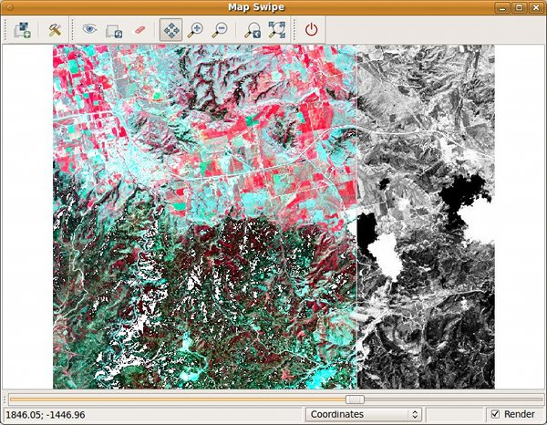

DESCRIPTION
The Map Swipe is a wxGUI component
which allows the user to interactively compare two raster maps of the same
area by revealing different parts of the raster maps.
It is useful e.g. for comparing raster maps from different time periods.
Map Swipe can be launched from the menu File -> Map Swipe.
Map Swipe allows to:
- switch orientation of the swipe line (horizontal or vertical)
- zooming, panning
- automatically load maps when opening Map Swipe with two selected raster maps in Layer Manager

SEE ALSO
wxGUI
wxGUI components
See also the user wiki page.
AUTHOR
Anna Kratochvilova,
Czech Technical University in Prague, Czech Republic
$Date: 2012-03-07 13:21:57 +0100 (Wed, 07 Mar 2012) $